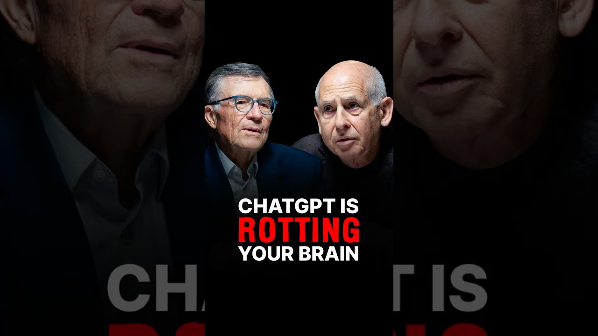

This was a very interesting video that got me reflecting a lot on the information I was attending. The short term and long term effects of using AI tools are hurting this generation but even though people realize that it is difficult to change already established habits. I like how the video compares the current use of AI tools with the past experience of usage of calculators. Something that people are already familiar with and know the benefits as well as the loss of using these tools. Tools help free up cognitive space which is great when we have multiple tasks to do but the danger comes when you do not play your part. What does this mean well from the video? I learned that this is when you lose interacting with the tool and do not use your brain to think. Managing your mood and its ups and downs would increase your cognitive load. You have to increase your adaptability. In the video the experts talked about how people are now too lazy to spell. I think I can relate to this in a way. After the long summer break and having returned to school I found that I had relied on auto correct. I often spelled words incorrectly. With the use of AI, learning is no longer about repeating problems and solving them again and again. Then there is procrastination which I found shocking. They explained it very well. Procrastination is a mental block or energy barrier. I found myself reflecting when I heard that. Procrastination often happens because I allowed it and I had a choice of opportunities. The link between Chat GPT and dementia was said to be you use it or lose it. If you use your brain more than your chances will be lower but the more tools that you expose yourself to than the chances would increase. When I use tools like many others we would not have a strong connection with the text thus we will not remember it minutes after. I think this is very true if I do not do things with my full heart then that would fade in my memory quicker. I like how the CEO of the video pointed out his experience that people do not sound like themself on Linkedin. It surprised me how immersed people are in that type of lifestyle. You would have to lose a part of your identity to AI tools because those are not words that are coming from you but rather your input into the computer. You have to be part of the experience to have recollection of it. An interesting approach that the experts pointed out was that people used to learn spellings from phonics which is by rote by memorizing the stuff. Now people are moving farther away from that learning style and listing that to the AI tools. The use of AI is making our brain older in a way because people are not exercising their brains just like how you need to expertise your brain to keep it. People have to use proper problem solving to reach new heights with their creativity.